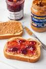

PBJ Toast recipes

Description
Best PBJ Toast sandwiches ever!
Choose the jam yourself!
However, the best are strawberry and blueberry jams ;)
Ingredients
- Toast bread
- Peanut butter
- Your favourite jam
Steps
- Put the bread into the toaster for 3 minutes
- Meanwhile, contemplate which jam you choose
- Once the toasts are ready, put some jam and peanut butter on them in equal amounts
- Bon appetit!